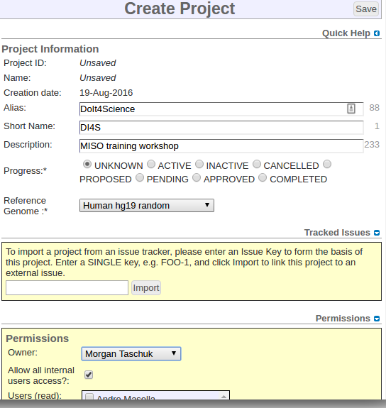

MISO
MISO1. Logging In
1. Logging in
Much like the old Geospiza LIMS, you need to log in to MISO LIMS in order to make changes to any LIMS entities. Logging in lets us record any changes you make and also allows us to set appropriate permissions.
If you were able to log in to Geospiza LIMS, you already have the correct
permissions and can proceed to logging in. If you are a new user, you will need
to contact helpdesk@oicr.on.ca so that they put you into the appropriate
Active Directory group, MISO_ROLE_INTERNAL.
- Click on http://miso.gsi.oicr.on.ca.
- Enter your username (e.g. jdoe) and password and click the Login button. MISO uses the same username and password as your OICR email account.
If all goes well, you should see the MISO Dashboard and see a message at the top right: "Logged in as: jdoe".
2. Creating projects
A Project contains information about a set of Studies that may comprise many different Samples, Experiments and Runs. Samples are attached to Projects as they are often processed into Dilutions, which are then Pooled and sequenced. Projects also have Overviews, which hold information about a Project proposal. In this part of this workshop, we will create projects, set permissions, and familiarize ourselves with the project overview page.
Projects represent a sequencing effort toward a particular goal, usually led by a particular group or principal investigator. For example, the PCSI project is sequencing pancreatic tumors, references, cell lines and xenografts as part of the International Cancer Genome Consortium, and the FFPER project sequences samples from a bio-bank with a number of different preparations and treatments in order to determine the impact of each on data quality.
In this workshop, you will make your own project where you will create samples, libraries and other entities.
Most pages have a "Quick Help" tab at the top right under the Save button where you can find basic information about the current page.
2.1 Creating a new project
- After logging in, click the My Projects tab at the top of the MISO dashboard.
- Select the Add Project button at the top right corner.
The Create Project page will display with a number of fields that you can fill out.
- Ignore Project ID and Name, since they are set by MISO once the Project is saved.
- Enter a unique Alias. The alias is a name, chosen by us, that is associated
with a project. The aliases must be a unique and contain only letters or
numbers. It cannot contain spaces or punctuation. e.g.
DoIt4Science(be creative!) - Enter a Short Name for your project. The short name should be 2-5 letters in
all CAPS and related to the project alias. This short name will be used to
automatically generate sample and library names. e.g. short name:
DI4S - In the Description field, enter
MISO training workshop [Date] - Choose the amount of Progress that your project has accomplished:
- Unknown : I was told to enter this data and I does what they tells me.
- Active : We are receiving/have received samples and are actively working on this project.
- Inactive : Project is not yet done, but waiting for external collaborators, REB approval, papers to be published, etc.
- Cancelled : Project was scrapped because we did not get funding/samples/REB approval.
- Proposed : Project Initiation form has been received and is awaiting go-ahead by Genomics leadership.
- Pending : We are waiting for the project to start.
- Approved : Project has been approved by Genomics leadership.
- Select the Reference Genome
Human hg19 random. This should be the primary species that will be sequenced in the course of the project. Xenografts count as human. - In the Permissions section, select
your namefrom the Owner drop-down. - Make sure that Allow all internal users access? is selected.
|  |
- Click the Save button at the upper right.
Upon save, you will be taken to the Edit Project page, where you can see the project you just created. Notice that the Project ID and Name now have values. The Project ID will be an integer, and the Name will begin with PRO. These are specific to this project and used by MISO to track the project internally.
2.1.1 Add a Study
In order to make sure MISO is SRA-compliant, you must add a Study to your Project. Studies are legacy objects that are not really used in the current system, but need to be added anyway.
- Click on the Studies section to expand the section.
- Hover over the Options menu at the top right of the Studies table, and click Add new Study.
- Much like creating a Project, enter:
- Alias (letters and numbers only): this can have any name, but make sure it is recognizable as belonging to your Project.
- Description: any free-text description
- Select a Study Type from the drop-down menu : Unless you are certain of the
sequencing type, select
Other. - Click the Save button at the upper right.
2.2 My Projects tab
- Click again on the My Projects tab.
You will see a list of all of the projects you have access to in MISO.
- Find the project you just created in the list. You can sort any column in the table by clicking the column header. You can also search for your project by any of the displayed columns and the table will filter as you type.
- Click on the link in the Project Name, Short Name or Alias (they all go to the same page).
2.3 Edit Project page
The Edit Project page is used for viewing basic information about a project as well as all of the entities associated with that project, such as the samples, libraries, pools, and runs.
Once you create different entities for your project like Samples, Libraries, Library Dilutions, Pools and Runs, you can view and search them on this page. Each section can be expanded by clicking on its name or the arrow next to it. The tables under each section can be sorted by the column header or searched using the field in the upper right. The Options menu above the search bar contains actions you can perform on the entities in the project.
2.3.1 Add a project overview
Project Overviews specify the origin of a specific set of samples that are part of the project. For example, if you are receiving some samples from a clinician and other samples from a hospital, you can enter the expected numbers of samples from each and indicate how many of them passed quality control and what stage of preparation has been completed. Project overviews are optional and only used to indicate overall progress on the My Projects page.
- Click Add Overview at the right side under the Project Information.
- In the pop-up, enter a principal investigator (
You Yourname!) - In No. proposed samples, enter
5. - Click the Add Overview button.
The Edit Project page will reload and now there will be a table with your name under the Project Information section. You can fill in other values if you wish, or leave them blank for now. You can also select the checkboxes below the table to show that certain stages have been completed. Remember to press the Save button after you are finished editing.
2.3.2 Add Project Files
In the Project Files section, you can add attach any necessary documents to the project (e.g. Project Information form, REB).
- Click the Project Files section on the Edit Project page.
- Find a document or image that is appropriate for your study
Now that your project has been created, continue to make your first samples.